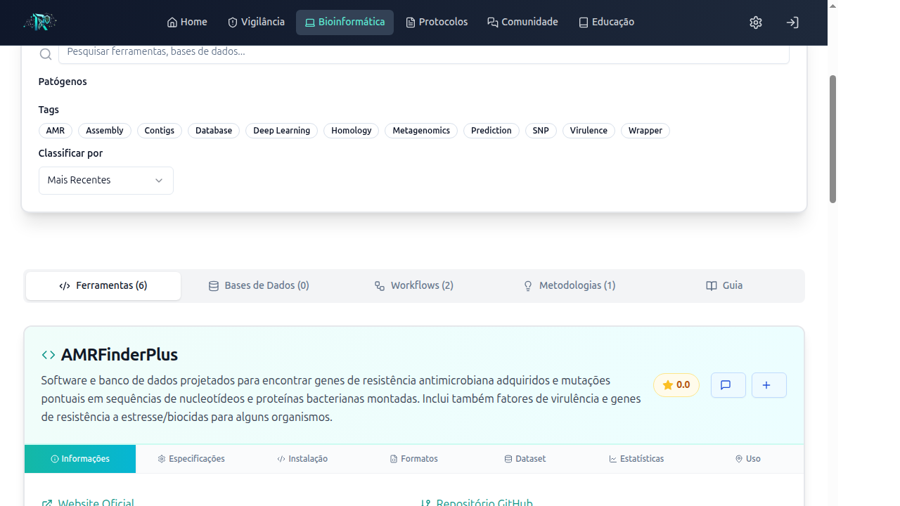
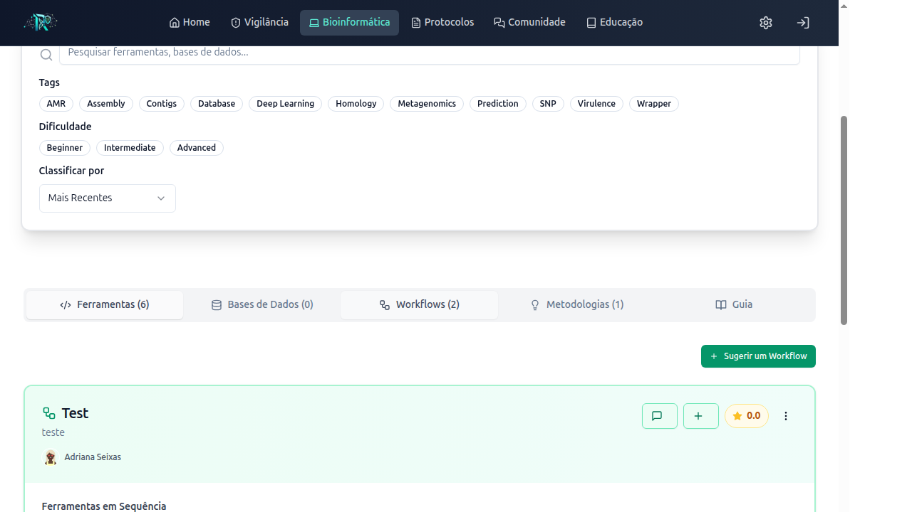
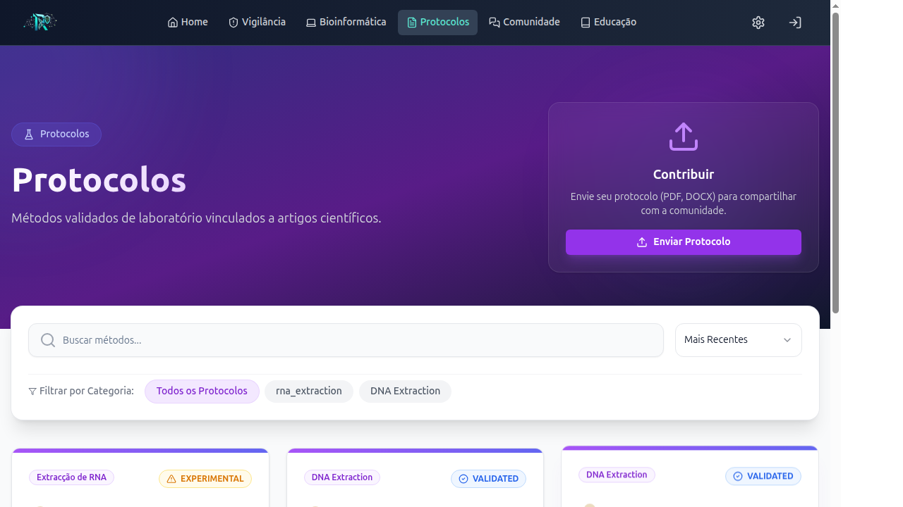
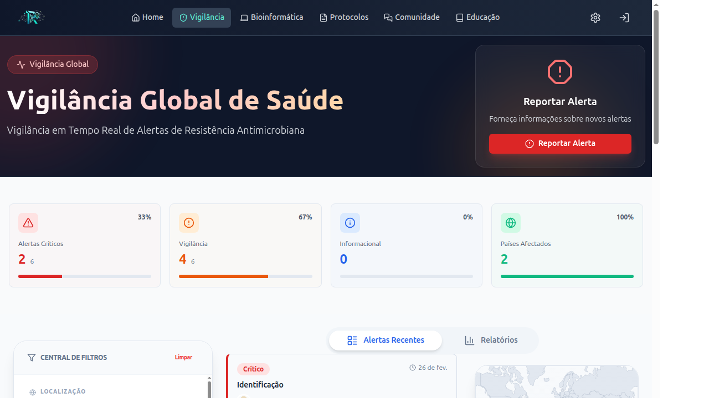
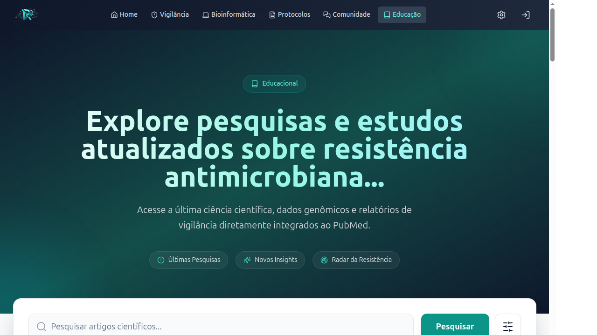

Manual rápido do ResistoHub
Este manual explica o intuito de cada recurso da plataforma e como ele entra no uso prático. A ideia é orientar quem pesquisa, quem trabalha em laboratório e quem quer colaborar com a comunidade.
A plataforma está em fase de avaliação e deve ser vista como uma demo. Por isso, a opinião da comunidade é importante para ajustar o uso e melhorar o conteúdo.
1. A página de bioinformática
A rota /pt-br/bioinfo organiza ferramentas, bancos de dados, workflows e metodologias. Ela serve para localizar recursos rapidamente e ligar cada item a uma discussão prática no fórum.

2. Para que serve cada área
- Bioinformática: encontrar ferramentas e bases de dados, avaliar recursos e abrir discussão.
- Workflows: mostrar uma sequência de análise com várias ferramentas.
- Casos de uso: descrever uma metodologia de trabalho.
- Protocolos: compartilhar procedimentos de laboratório e discutir validação.
- Vigilância: registrar e acompanhar alertas epidemiológicos.
- Comunidade: concentrar debates clínicos, técnicos, acadêmicos e resultados negativos.
- Educação: organizar leitura científica e artigos recentes.
3. Como usar a plataforma
- Abra a área que faz mais sentido para sua necessidade.
- Use busca e filtros para chegar ao conteúdo desejado.
- Leia os detalhes do recurso antes de comentar ou publicar.
- Leve a discussão para o fórum quando houver dúvida, comparação ou complemento útil.
4. Bioinformática: ferramentas, workflows e casos de uso
Ferramentas
- Pesquise por nome ou tags.
- Veja documentação, instalação e uso básico.
- Avalie e comente recursos que você realmente usa.
Workflows e casos de uso
- Workflows mostram a sequência técnica da análise.
- Casos de uso explicam uma metodologia de trabalho para outras pessoas reproduzirem ou adaptarem.

5. Protocolos
A área de protocolos serve para consultar e divulgar procedimentos de laboratório. Ela permite usar o conteúdo de forma prática, sem separar o protocolo da discussão sobre sua aplicação.
- Pesquise por título, tags ou categoria.
- Abra os detalhes para ver autores, instituição, DOI e informações técnicas.
- Contribua com novos protocolos.
- Discuta se o protocolo é padrão ouro, validado ou apenas uma rotina útil do laboratório.

6. Vigilância
A área de vigilância organiza alertas epidemiológicos de resistência antimicrobiana. Ela ajuda a ver o que está acontecendo, onde está acontecendo e como o evento pode ser tratado dentro da plataforma.
- Filtros por país, estado, cidade, tipo de evento e severidade.
- Mapa e lista de alertas para visualização rápida.
- Formulário para publicar novos eventos quando necessário.

7. Comunidade
A comunidade é o ponto de conexão da plataforma. Tudo o que é útil pode gerar conversa: um protocolo, um alerta, um artigo, uma ferramenta, um workflow ou um caso de uso.
- Discussão clínica para dúvidas e casos.
- Resultado negativo para registrar o que não funcionou e evitar retrabalho.
- Publicação para artigos, manuscritos e evidências científicas.
- Discussão geral para temas amplos da comunidade.
8. Educação
A área educacional mantém a comunidade atualizada com artigos recentes e ajuda a transformar leitura em discussão prática. O foco não é só mostrar o artigo, mas ligar a publicação ao que a comunidade pode aprender com ela.
- Pesquisar publicações recentes.
- Ver título, autores, journal, ano e resumo.
- Levar o artigo para a comunidade quando houver discussão útil.

9. Fluxo recomendado
- Escolha a área correta.
- Use busca e filtros.
- Abra o detalhe do recurso.
- Discuta no fórum quando houver dúvida ou valor colaborativo.
- Conecte o conteúdo com outro recurso do site sempre que fizer sentido.